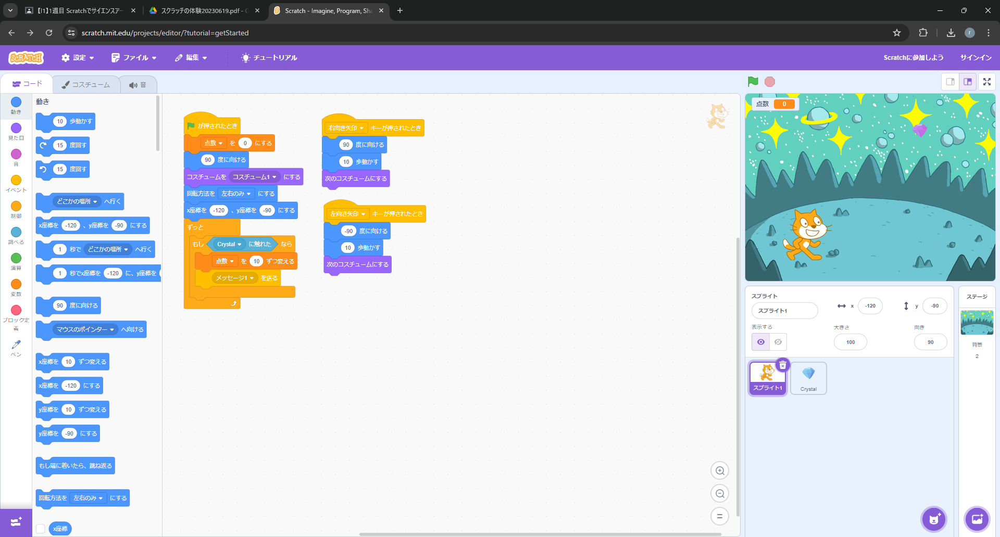

1-2 ゲーム

1.内容
Scratchを使用し、ネコのスプライト(以下"Cat")を移動させ、落下してくるスプライト(以下"Crystal")を掴んでポイントを稼ぐゲームを作成した。
上の図のプログラムは、Catをキーボードの右または左矢印キーで移動させ、ランダムで落下してくるCrystalを掴まえるごとにポイントが10増えるというゲームになっている。
また、クリアコマンドなどは作成していないため、永遠にポイントを稼ぐことができる。
2.感想
体験入学のときに触れた内容ではあったが、その時とはまた違う完成になったと思う。スプライトが移動時、方向転換した際に少し固まるのが気にかかるため、次の機会があれば修正を試みたい。
1-1の図や1-2の図で示したプログラムも含め、久しぶりにScratchを触ってみて、改めてブロックでプログラムを簡単に組み立てることができるScratchというサイトの便利さは凄いのだと感じた。